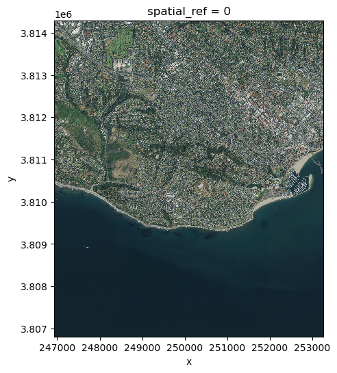

This post was rendered from an .ipynb notebook through quarto
Code
import numpy as npimport geopandas as gpdimport rioxarray as rioxrimport matplotlib.pyplot as pltfrom shapely.geometry import Polygon# used to access STAC catalogsfrom pystac_client import Client# used to sign items from the MPC STAC catalogimport planetary_computer# other libraries for nice outputsfrom IPython.display import Image
Access
WE use the Client function from the pystac_client pacakge to acess the catalog:
The modifier parameter is needed to access the data in the MPC catalog.
Exploration
Let’s check out some of the catalog’s metadata:
Code
# metadata from the catalogprint('Title: ', catalog.title)print('Description: ', catalog.description)
Title: Microsoft Planetary Computer STAC API
Description: Searchable spatiotemporal metadata describing Earth science datasets hosted by the Microsoft Planetary Computer
We can access the catalog’s collections by using the get_collections() method:
Code
catalog.get_collections()
<generator object Client.get_collections at 0x18bfe1cf0>
Notice the output of the get_collections() is a generator.
This is a special kind of lazy object in Python over which you can loop over like a list. Unlike a list, the items in the generator do not exist in memory until you explicitly iterate over them or convert them to a list.
Let’s try getting the collections from the catalog again:
Code
# get collections and print their namescollections =list(catalog.get_collections())print('Number of collections :', len(collections))print('Collections IDs: ')for collection in collections:print('- ', collection.id)
description: The [National Agriculture Imagery Program](https://www.fsa.usda.gov/programs-and-services/aerial-photography/imagery-programs/naip-imagery/) (NAIP) provides U.S.-wide, high-resolution aerial imagery, with four spectral bands (R, G, B, IR). NAIP is administered by the [Aerial Field Photography Office](https://www.fsa.usda.gov/programs-and-services/aerial-photography/) (AFPO) within the [US Department of Agriculture](https://www.usda.gov/) (USDA). Data are captured at least once every three years for each state. This dataset represents NAIP data from 2010-present, in [cloud-optimized GeoTIFF](https://www.cogeo.org/) format.
We can narrow the search within the catalog by specifying a time range, area of interest, and teh collection name. The simplest way to define the area of interest to look for in the catalog are:
a GeoJSON-type dictionary with coordinates of the bounding box
as a list [xmin, ymin, xmax, ymax] with the coordinate values defining the four corners of the bounding box
You could also use a point, or some more complex polygon.
In this lesson, we will look for NAIP scenes over Santa Barbara from 2018 to 2020. We’ll use the GeoJSON method to define the area of interst:
Code
# temporal range of interesttime_range ="2018-01-01/2023-01-01"# NCEAS bounding box (as a GeoJSON)bbox = {"type": "Polygon","coordinates":[ [ [-119.70608227128903, 34.426300194372274], [-119.70608227128903, 34.42041139020533], [-119.6967885126002, 34.42041139020533], [-119.6967885126002, 34.426300194372274], [-119.70608227128903, 34.426300194372274] ] ]}# catalog searchsearch = catalog.search( collections = ['naip'], # list with collection id intersects = bbox, datetime = time_range)search
<pystac_client.item_search.ItemSearch at 0x18cf35190>
To get the items found in the search (or check if there were any matches in the search), we use the item_collection() method:
Code
items = search.item_collection()# number of items in searchlen(items)
Notice each asset has an href, which is a link to the asset object (i.e. the data). For example, we can use the URL for the rendered preview asset to plot itL:
The raster data in our current item is in the image asset. Again, we access this data via its url. This time we open it using rioxr.open_rasterio() directly:
# plot raster with correct ratiosize =6# heigh in inches of plotaspect = sb.rio.width/sb.rio.heightsb.sel(band = [1,2,3]).plot.imshow(size = size, aspect = aspect)
<matplotlib.image.AxesImage at 0x7a01ee027350>

Exercise
the ‘cop-dem-glo-90’ collection contains teh Cpernicus DEM at 90m resolution ( the one we used for the Grand Canyon).
Use the bbox for Santa Barbara to look for items in this collection.
Get the first item in the search and check its assets.
Plot the item’s rendered preview asset
Open the item’s data using rioxarray
Code
# 1 Use the bbox for Santa Barbara to look for items in this collection.cop_items = catalog.search( collections = ['cop-dem-glo-90'], # list with collection id intersects = bbox).item_collection()len(cop_items)
1
Code
# 2. Get the first item in the search and check its assets.item1 = cop_items[0]item1.assets